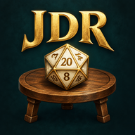

App JDR
État du service
Services
Dernière vérification : ·
Pendant une coupure
L'application est hébergée chez nous : une coupure d'Internet ou de courant la rend injoignable. Rien n'est perdu : tout reprend dès le retour de la connexion. Cette page se met à jour toute seule.